Pokémon in the NYPL archives
2018-10-4 04:10:04
Swadloon on
DINNER, FIFTH ANNUAL [held by] PUMPERNICKEL CLUB [at] "HOTEL BREVOORT NEW YORK, NY" (HOTEL;)
.
2018-10-4 02:10:11
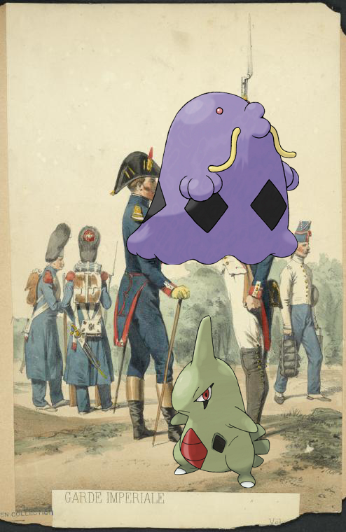
Larvitar, Swalot @
France, 1805-1814
.
2018-10-4 00:10:04
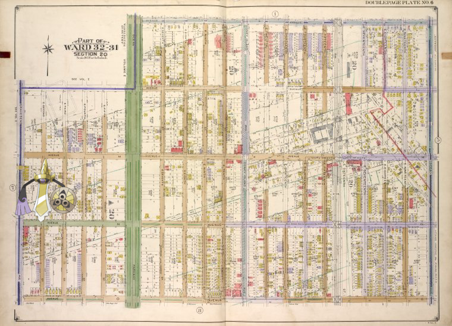
+
Brooklyn, Vol. 3, Double Page Plate No. 6; Part of Ward 32 - 31, Section 20; [Map bounded by Avenue K, Ocean Ave.; Including Avenue O, Gravesend Ave.]
.
2018-10-3 22:10:04
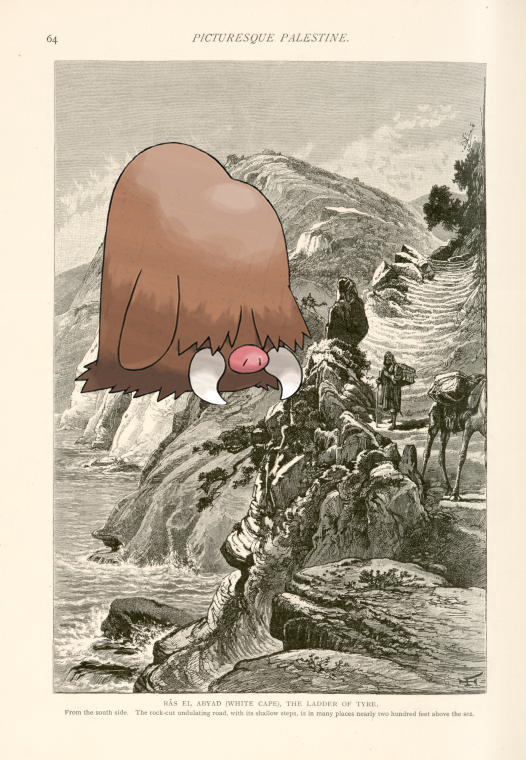
Piloswine on
Râs el Abyad (White Cape), the ladder of Tyre. From the south side. The rock-cut undulating road. with its shallow steps, is in many places nearly two hundred feet above the sea.
!
2018-10-3 20:10:06
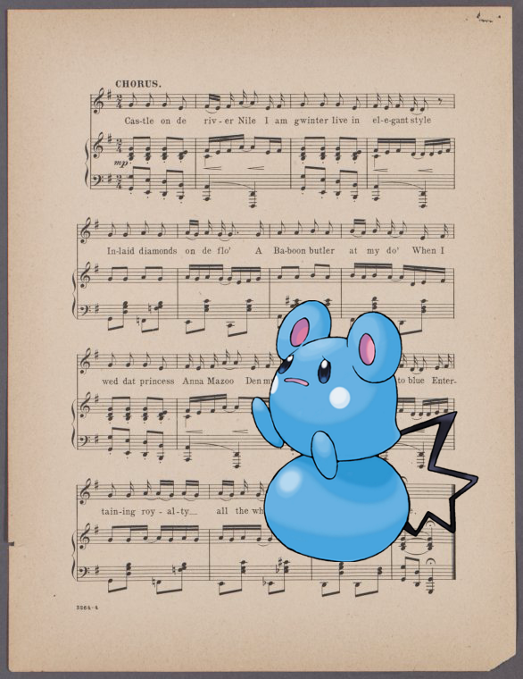
Azurill ;
My castle on the Nile
2018-10-3 18:10:07
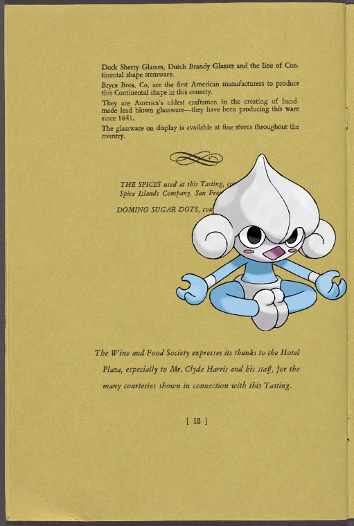
Meditite –
The Ballroom of the Hotel Plaza
!
2018-10-3 16:10:07
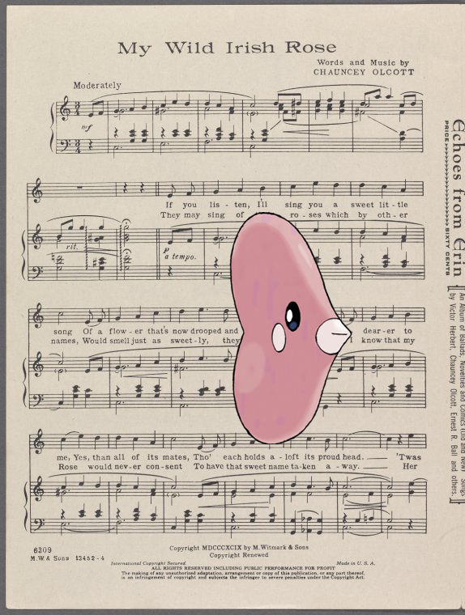
Luvdisc |
My wild Irish rose
.
2018-10-3 14:10:05
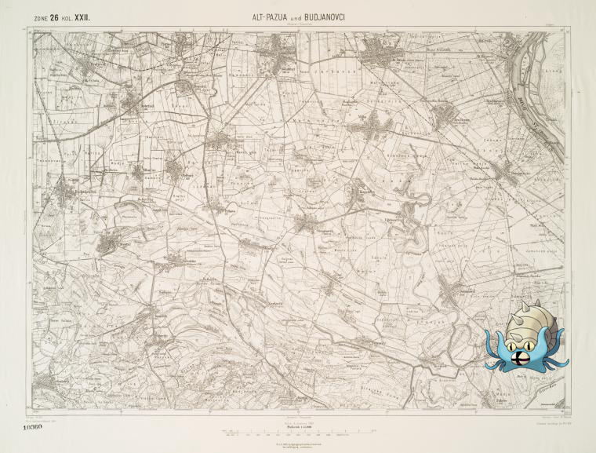
Omastar on
Alt-Pazua und Budjanovci.
2018-10-3 12:10:04
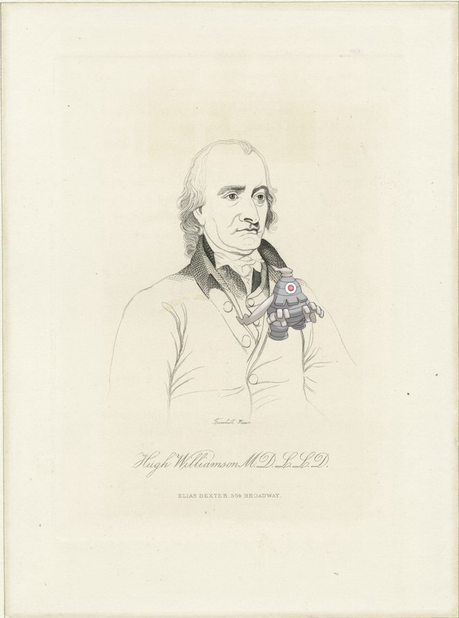
Dusclops @
Hugh Williamson M.D. L.L.D.
.
2018-10-3 10:10:04
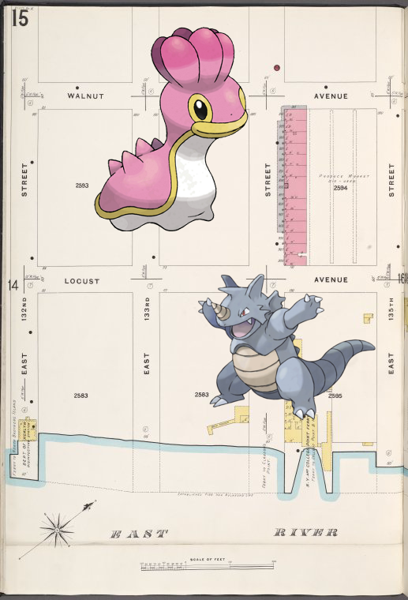
Rhydon, ;
Bronx, V. 9, Plate No. 15 [Map bounded by E. 132nd St., Walnut Ave., E. 135th St., East River]
.
2018-10-3 08:10:04
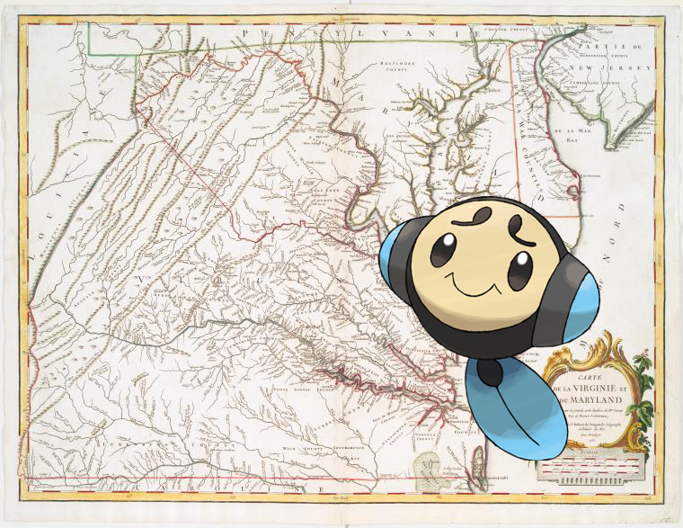
Tympole ;
A map of the most inhabited part of Virginia containing the whole province of Maryland with part of Pensilvania, New Jersey and North Carolina
.
2018-10-3 06:10:07
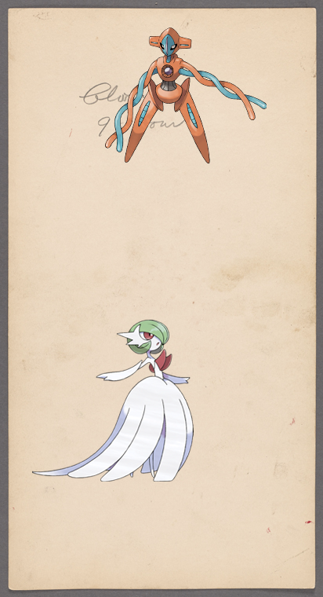
Gardevoir, @
23-Chrysanthemums (Pink)
58
|
57
|
56
|
55
|
54
|
53
|
52
|
51
|
50
|
49
|
48
|
47
|
46
|
45
|
44
|
43
|
42
|
41
|
40
|
39
|
38
|
37
|
36
|
35
|
34
|
33
|
32
|
31
|
30
|
29
|
28
|
27
|
26
|
25
|
24
|
23
|
22
|
21
|
20
|
19
|
18
|
17
|
16
|
15
|
14
|
13
|
12
|
11
|
10
|
9
|
8
|
7
|
6
|
5
|
4
|
3
|
2
|
1
|
0